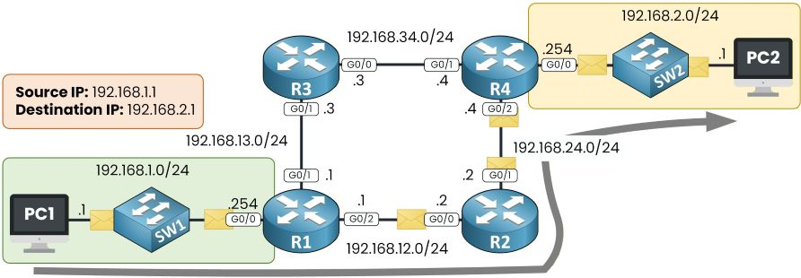

Networking is largely about the interconnection of various machines either across different networks using routers, or within local networks using switches. Routers use "routing" to determine the path a packet takes across a network, while forwarding is the process in which a router actually sends the packet to the next hop or stepping stone within the path that has been chosen. Depending on which protocol is being used a router may be given the topology of its routing area, or it may learn about reachable networks from its neighbors.